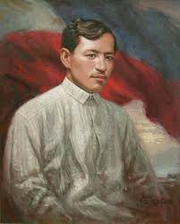

Dr. Jose Rizal
National hero of the Philippines

José Protasio Rizal Mercado y Alonso Realonda was a Filipino nationalist and polymath during the tail end of the Spanish colonial period of the Philippines. He is tagged as the national hero of the Filipino people.
- 1848 - José Rizal’s mom, Teodora Morales Alonso-Realonda y Quintos, and dad, Francisco Rizal-Mercado y Alejandra, marry on June 28th.
- 1861 - On June 19th José Rizal is born to become the seventh child born to his parents. Three days later Rizal was christened with the name Jose Protasio Rizal-Mercado y Alonso-Realonda.
- 1870 - José begins school under the instruction of Justiniano Aquin Cruz at just nine years of age.
- 1871 - José continues his education under the instruction of Lucas Padua.
- 1875 - Rizal enters Ateneo as a border at just 14 years of age.
- 1876 - At the age of 15, Rizal receives a Bachelor of Arts Degree from the Ateneo de Manila. He not only receives this degree, but receives it with the highest honors possible.
- 1877 - In June José begins to go to school at St. Tomas University in Manila where he studies philosophy.
- 1877 - In November Rizal writes a poem and receives recognition for his writing from the Royal Economic Society of Friends of the Country, also known as Amigos del Pals. The recognition comes in the form of a diploma of merit and honorable mention.
- 1878 - In June Rizal decides to switch gears in his educational pursuits and transfers into the medical courses at St. Tomas University. During this time he also writes an additional two poems that win him further recognition.
Jose Rizal's Early Life
Writing Career
For more information about the national hero of the Philippines Dr. Jose Rizal. Click on his Wikipedia entry